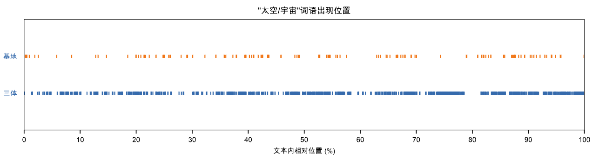

一、cntext
1.1 新增函数
cntext2.1.2新增函数有
- get_cntext_path() 查看cntext2.x的安装路径
- read_pdf()/read_docx() 读取 pdf、docx文件
- extract_mda() 提取中文年报文本中的管理层讨论与分析
- matplotlib_chinese() 支持matplotlib显示中文
- lexical_dispersion_plot1() 词汇分散图
- lexical_dispersion_plot2() 词汇分散图
已购买cntext2.x的用户，可私信找到大邓获取最新版本安装包！
1.2 安装
所有 cntext2.x 安装方法类似， 以目前 cntext2.1.2 为例，将 cntext-2.1.2-py3-none-any.whl 放置于桌面，打开 cmd (苹果电脑打开terminal)， 输入cd desktop
cd desktop
之后在 cmd (苹果电脑打开terminal) 中使用 pip3 安装
pip3 install distinctiveness
pip3 install cntext-2.1.2-py3-none-any.whl
文章开头和文章末都有*** cntext-2.1.2-py3-none-any.whl*** 获取方式说明。
二、实验
2.1 get_cntext_path()
如果你熟悉PYTHON，想对cntext内进行修改， 可以使用该函数找到cntext安装路径。
import cntext as ct
ct.get_cntext_path()
Run
/Library/Frameworks/Python.framework/Versions/3.11/lib/python3.11/site-packages/cntext
不同电脑返回的位置是不同的，以上路径是大邓Mac中cntext2.x的安装路径
2.2 read_docx()
读取 docx文件。 自己diy一个 test.docx , 在文件内写一个句子，测一测
%%time
import cntext as ct
text = ct.read_docx('test.docx')
text
Run
这是来自docx文件里的内容
2.3 read_pdf()
读取 pdf文件
%%time
import cntext as ct
#读取格力电器2023会计年度的年报文件
text = ct.read_pdf('格力电器2023.pdf')
text
Run
CPU times: user 5.5 s, sys: 48.9 ms, total: 5.55 s
Wall time: 5.55 s
\n珠海格力电器股份有限公司 2023年年度报告全文 \n珠海格力电器股份有限公司 \n2023年年度报告 \n \n \n二〇二四年四月 \n珠海格力电器股份有限公司 2023年年度报告全文 \n 第 2 页 共 249 页 第一节 重要提示、目录和释义 \n公司董事会、监事会及董事、监事、高级管理人员保证年度报告内容\n的真实、准确、完整，不存在虚假记载、误导性陈述或重大遗漏，并承担\n个别和连带的法律责任。 \n公司负责人董明珠、主管会计工作负责人廖建雄及会计机构负责人\n（会计主管人员）刘炎姿声明：保证本年度报告中财务报告的真实、准确、\n完整。 \n所有董事均已出席了审议本报告的董事会会议。 \n本报告中所涉及的未来计划、发展战略等前瞻性陈述，不构成公司对\n投资者的实质承诺，投资者及相关人士均应当对此保持足够的风险认识，\n并且应当理解计划、预测与承诺之间的差异，敬请注意投资风险，理性投\n资。 \n公司经本次董事会审议通过的利润分配预案为：拟以本利润分配预案\n披露时享有利润分配权的股本总额 5,521,943,646 股（总股本\n5,631,405,741 股扣除公司回购账户持有的股份 109,462,095 股）为基数，\n向全体股东每 10股派发现金红利 23.80元（含税），送红股 0股（含\n税），不以公积金转增股本。 \n \n珠海格力电器股份有限公司 2023年年度报告全文 \n 第 3 页 共 249 页 目录 \n第一节 重要提示、目录和释义 ................................ .......................... 2 \n第二节 公司简介和主要财务指标 ................................ ........................ 6 \n第三节 管理层讨论与分析 ................................ ............................... 10 \n第四节 公司治理 ................................ ................................ ........ 42 \n第五节 环境和社会责任 ................................ ..
2.4 extract_mda()
提取A股年报中的MD&A文本内容。如果返回'',则提取失败。
ct.extract_mda(text, kws_pattern='')
- text 中国A股年报原始文本
- kws_pattern 管理层讨论与分析章节识别关键词的模板。cntext内置的kws_pattern内容如下
kws_pattern = '董事会报告|董事会报告与管理讨论|企业运营与管理评述|经营总结与分析|管理层评估与未来展望|董事局报告|管理层讨论与分析|经营情况讨论与分析|经营业绩分析|业务回顾与展望|公司经营分析|管理层评论与分析|执行摘要与业务回顾|业务运营分析'
基本上2015年之后，识别命中率在90%以上。
import cntext as ct
#读取格力电器2023会计年度的年报文件
text = ct.read_pdf('格力电器2023.pdf')
#提取mda
mda_text = ct.extract_mda(text)
mda_text
Run
管理层讨论与分析 \n一、报告期内公司所处行业情况 \n（一）行业发展现状 \n1.消费领域 ——家电行业稳定增长，空调市场恢复明显 \n2023年，中国经济保持了整体恢复向好的态势，激发消费是稳增长的重中之重。国家鼓励和推动消费品以旧换\n新，促进消费经济大循环，加速更新需求释放，推动高能效产品设备销售和出口增长，进一步激发绿色消费潜力。 \n1）家电行业稳定增长 \n2023年，国内经济恢复明显，家电行业稳定增长。根据全国家用电器工业信息中心发布的《 2023年中国家电\n行业年度报告》，家电行业外销明显增长，出口规模为 6,174亿元，同比增长 9.9%；国内市场实现稳步增长，销售\n规模为7,736亿元，同比增长 1.7%。 \n2）空调市场规模实现较好恢复 \n2023年，空调市场恢复明显。根据奥维云网（ AVC）零售推总数据， 2023年空调市场实现零售额 2,117亿元，\n同比增长 7.5%，零售量 6,085万台，同比增长 6.5%。根据产业在线数据， 2023年，家用空调生产 16,869.2 万台，\n同比增长 11.1%，销售17,044.0 万台，同比增长 11.2%，其中内销出货 9,959.7万台，同比增长 13.8%，出口出货\n7,084.3万台，同比增长 7.8%，内外销实现双增长。 \n2.工业领域 ——工业经济稳中向上态势 \n根据工信部数据， 2023年，我国规模以上工业增加值同比增长 4.6%，同比提升 1个百分点，其中制造业规模\n以上工业增加值同比增长 5.0%。 \n智能制造产业规模日益增长。从《中国制造 2025》再到《“十四五”智能制造发展规划》，均以发展先进智能\n制造业为核心目标，布局规划制造强国的推进路径。我国已 初步形成以自动化生产线、智能检测与装配装备、智能\n控制系统、工业机器人等为代表的智能制造产业体系，产业规模日益增长。中商产业研究院预计， 2023年我国智能\n制造装备市场规模将超过 2.97万亿元。前瞻产业研究院预测，到 2027年，我国智能制造行业市场规模将达到 6.6\n万亿元，其中智能制造装备市场规模约 5.4万亿元，智能制造系统解决方案市场规模约 1.2万亿元。 2023年，国内\n加快推动传统产业技术改造升级，加大智能制造推广力度，组建成 62家“灯塔工厂”，占全球“灯塔工厂”总数\n的40%，培育了 421家国家级智能制造示范 工厂，万余家省级数字化车间和智能工厂。 \n空调核心零部件产业规模增长明显。根据产业在线数据， 2023年，空调转子压缩机市场高速发展，全年产量达\n到2.61亿台，同比增长 12.2%；全年销售量达到 2.62亿台，成为行业新巅峰。内销市场，转子压缩机表现出色，\n全年保持正向增长，预计内销为 2.27亿台，同比增长 14.3%；外销市场，全年预计出口 3,564.7万台，同比增长\n2.1%。受益于 2023年下游空调市场销售规模的增长，空调电机行业产销规模同步提升，达到 4.22亿台，同比增长\n6.8%；内销市场出货约为 3.5亿台，同 比增长8.4%；出口市场出货约为 0.7亿台，同比持平。压缩机和电机产业规\n模的增长，为整个空调行业的发展提供了有力支持。 \n
.......
.......
2.5 matplotlib_chinese()
matplotlib默认不支持中文可视化， cntext新增该函数，可以解决中文可视化问题
import cntext as ct
plt = ct.matplotlib_chinese()
plt.figure(figsize=(7, 4))
plt.plot([1, 2, 3, 4], [1, 4, 9, 16])
plt.title('中文图表', fontsize=10)
plt.show()

2.6 lexical_dispersion_plot1()
词汇分散图可视化， 对某一个文本text， 可视化不同目标类别词targets_dict在文本中出现位置
ct.lexical_dispersion_plot1(text, targets_dict, lang='chinese', figsize=(12, 6), title='特定词汇在不同文本来源的相对离散图', prop=True)
- text: 文本数据
- targets_dict: 目标类别词字典； targets_dict={‘pos’: [‘开心’, ‘快乐’], ‘neg’: [‘悲伤’, ‘难过’]}
- lang: 文本数据texts_dict的语言类型，默认’chinese'.
- figsize: 图的长宽尺寸. 默认 (8, 5).
- title : 图的标题；
- prop: 横坐标字符位置是否为相对位置. 默认True，横坐标索引值取值范围0 ~ 100
import cntext as ct
roles_dict = {
"汪淼": ['汪淼'],
"叶文洁": ['叶文洁'],
"罗辑": ['罗辑']
}
santi_text = open('三体.txt', encoding='utf-8').read()
ax = ct.lexical_dispersion_plot1(text = santi_text, #文本数据
targets_dict = roles_dict, #角色
figsize = (10, 4), #尺寸大小
lang = 'chinese', #中文数据
title = '《三体》小说角色出现位置', #标题
prop = True) #相对位置(横坐标轴取值范围0-100)
ax
ct.lexical_dispersion_plot1(text = santi_text, #文本数据
targets_dict = roles_dict, #角色
figsize = (10, 4), #尺寸大小
lang = 'chinese', #中文数据
title = '《三体》小说角色出现位置', #标题
prop = False) #绝对位置(横坐标轴取值范围与小说文本长度有关)
import cntext as ct
#diy了一个小词典
senti_dict = {
'pos': ['开心', '幸福', '快乐', '安宁', '希望'],
'neg': ['紧张', '恐惧', '害怕', '绝望']
}
santi_text = open('三体.txt', encoding='utf-8').read()
ax = ct.lexical_dispersion_plot1(text = santi_text,
targets_dict = senti_dict,
figsize = (10, 2),
lang = 'chinese',
title = '《三体》情绪词出现位置',
prop = True)
ax
2.7 lexical_dispersion_plot2()
词汇分散图可视化， 对某几个文本texts_dict， 可视化某些目标词targets在文本中出现相对位置(0~100)
ct.lexical_dispersion_plot2(texts_dict, targets, lang='chinese', figsize=(12, 6), title='特定词汇在不同文本来源的相对离散图')
- texts_dict: 多个文本的字典数据。形如{‘source1’: ‘source1的文本内容’, ‘source2’: ‘source2的文本内容’}
- targets: 目标词列表
- lang: 文本数据texts_dict的语言类型，默认’chinese'.
- figsize: 图的长宽尺寸. 默认 (8, 5).
- title : 图的标题；
targets = ['太空', '宇宙']
texts_dict = {'三体': open('三体.txt', encoding='utf-8').read(),
'基地': open('基地.txt', encoding='utf-8').read()}
ax = ct.lexical_dispersion_plot2(texts_dict = texts_dict,
targets = targets,
figsize = (10, 2),
title = '"太空/宇宙"词语出现位置',
lang = 'chinese')
ax

获取资料
- 100元 cntext-2.1.2-py3-none-any.whl
加微信 372335839， 备注「姓名-学校-专业」。 已购买cntext2.x的用户，可私信找到大邓获取最新版本安装包！